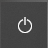
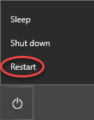

How To – Restart the Management GUI Computer
This How To provides the steps required to restart the Management GUI Computer using the Windows taskbar.
proDAS must be reconfigured if the Management GUI Computer is rebooted or restarted.
Restarting the Management GUI Computer from the Windows Taskbar
To shut down the Management GUI Computer, follow the procedure that best suits the situation as described below:
The proDAS Software is Configured and Scanning or Not Scanning
- From the proDAS Management GUI application menu bar, click File and select Exit ProDAS.
- On the Windows taskbar, click Start.
- Click Power , and select Restart from the pop-up menu.
.
The user is automatically logged off, any applications that are running are stopped and closed, the computer turns itself off and then turns itself back on.
- Once the computer has restarted, the user is automatically logged in as engineer.
The proDAS Software is NOT Configured and NOT Scanning
- On the Windows taskbar, click Start .
- Click Power , and select Restart from the pop-up menu.
.
The user is automatically logged off, any applications that are running are stopped and closed, the computer turns itself off and then turns itself back on.
- Once the computer has restarted, the user is automatically logged in as engineer.